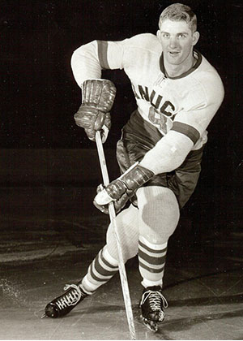
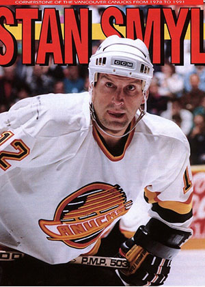
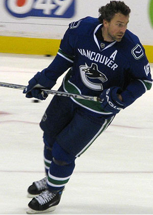
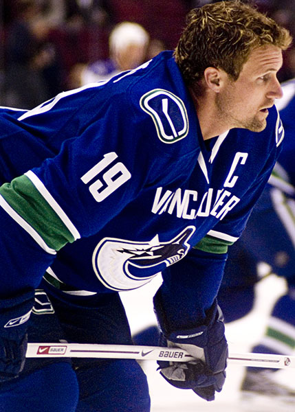
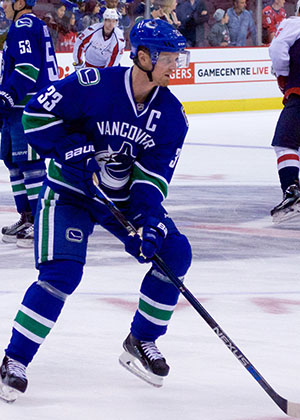
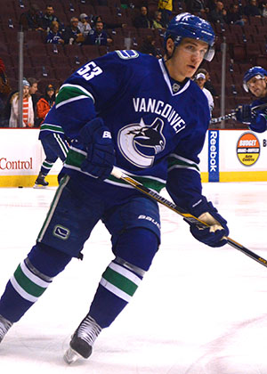

Orland Kurtenbach
Orland Kurtenbach was obtained by the Canucks in 1970 and was named the franchise's first NHL captain. On December 12, 1970, he recorded the first hat trick in Canucks history in a 5-2 victory over the California Golden Seals.

Stan Smyl
Stan Smyl was a third round, 40th overall selection in the 1978 NHL Amateur Draft by the Vancouver Canucks. Smyl entered the NHL with the Canucks the following season in 1978–79.

Trevor Linden
Trevor Linden made his NHL debut on October 6, 1988, against the Winnipeg Jets, aged 18. He scored his first goal on October 18, 1988, against Kelly Hrudey of the New York Islanders and later, on November 17, he scored his first hat-trick against the Minnesota North Stars.

Markus Naslund
On 20 March 1996, Marcus Naslund was dealt to the Vancouver Canucks in exchange for forward Alek Stojanov. Naslund made his debut with the team two days following the trade against the Dallas Stars.

Henrik Sedin
The 2000–01 NHL season was Henrik Sedin's first for the Canucks. His debut was the team's first game of the campaign on 5 October 2000, a 6–3 loss to the Philadelphia Flyers.With the game, Henrik and Daniel became the fourth pair of twins to have played in the NHL.

Bo Horvat
Bo Horvat made his NHL debut on November 4, 2014, against the Colorado Avalanche. Six games later, he scored his first NHL goal on November 20 against Frederik Andersen of the Anaheim Ducks.